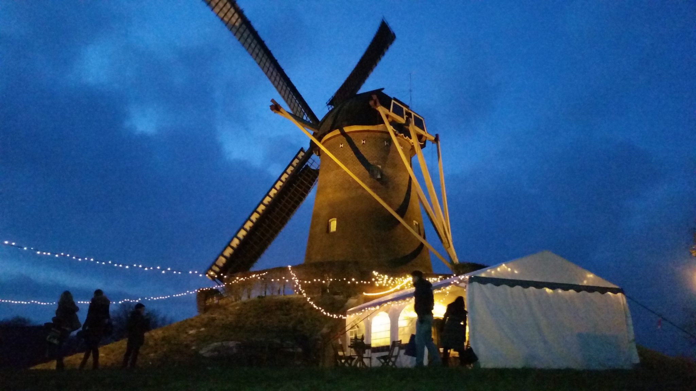

 De Wijchense Molen zoals we die vandaag de dag kennen heeft waarschijnlijk enkele voorgangers gehad. Het eerste bewijs dat terug is gevonden voor het bestaan van de molen in Wijchen stamt uit 1342. In dat jaar was er al sprake van het ‘recht van de wind’, er moet in die tijd dus al een houten molen hebben bestaan als voorganger van de huidige molen. In 1643 wordt er voor het eerst gesproken over een stenen windmolen. In die tijd waren stenen molens zeer uniek en erg kostbaar. Die molen was eigendom van Joffer van Elderen en haar twee zusters. In een akte uit 1723 is leesbaar dat er sprake is van ‘een windkorenmolen met bijhorende rosmolen met dwang voor de bewoners van kerspels Wijchen & Niftrik.’ Iedere inwoner moest zijn maalwerk laten verrichten op deze molen. De molen was toen eigendom van de adellijke familie van Scherpenseel, later van de familie Wevelinckhoven. 1771 is het jaar waarin het kasteel, De volgende 140 jaar blijft de molen in bezit van deze adellijke familie. In 1787 is oud V.O.C.-werknemer Evert Jan van Nijvenheim molenaar op de korenmolen van Wijchen, deze korenmolen is een vroege voorganger van de huidige Wijchense Molen.